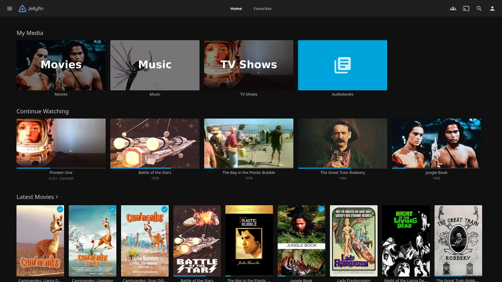
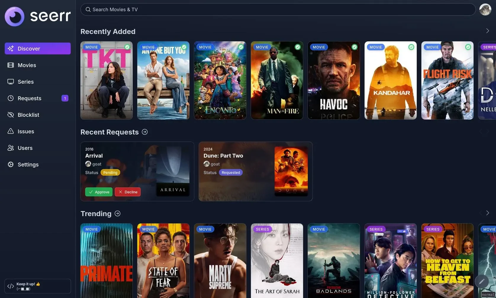

Your films and series, at home.Vos films et séries, à la maison.
Plaid installs seven apps that find, download and play your films and series, already linked together. One sitting, no terminal.Plaid installe sept applis qui trouvent, téléchargent et lisent vos films et séries, déjà reliées entre elles. En une fois, sans terminal.
Changed your mind? One click removes everything it installed. Nothing is left behind.Changement d’avis ? Un clic retire tout ce qu’il a installé. Rien ne reste derrière.
Free and open source · Linux, Synology, Raspberry Pi, Mac, WindowsGratuit et open source · Linux, Synology, Raspberry Pi, Mac, Windows
InstallingInstallation
0%
Downloading the appsTéléchargement des applis
Starting the appsDémarrage des applis
Linking the appsLiaison des applis
Ready to watchPrêt à regarder
The ARR stack, set up for youLa stack ARR, installée pour vous
Radarr, Sonarr, Prowlarr, Bazarr: apps whose names end in -arr. Add a downloader and a media player, and they make a streaming service at home that finds, fetches and files your films and series on its own. People call that set the ARR stack.Radarr, Sonarr, Prowlarr, Bazarr : des applis dont le nom finit en -arr. Ajoutez un logiciel de téléchargement et un lecteur, et elles forment un service de streaming à la maison qui trouve, récupère et range vos films et séries tout seul. C’est ce qu’on appelle la stack ARR.
By handÀ la main
Install Docker, then write the configuration of seven containers.Installer Docker, puis écrire la configuration de sept conteneurs.
Choose folders and ports every app agrees on.Choisir des dossiers et des ports sur lesquels toutes les applis s’accordent.
Copy each app’s API key into the others.Copier la clé d’API de chaque appli dans les autres.
Route the downloads through a VPN, and stop them if it drops.Faire passer les téléchargements par un VPN, et les couper s’il tombe.
Find out which two apps do not talk to each other, and why.Trouver quelles applis ne se parlent pas, et pourquoi.
With PlaidAvec Plaid
You answer four questions: a folder, a password, your VPN, and remote access if you want it.Vous répondez à quatre questions : un dossier, un mot de passe, votre VPN, et l’accès à distance si vous le voulez.
Plaid installs the seven apps and links them: keys, folders, libraries, quality, subtitles.Plaid installe les sept applis et les relie : clés, dossiers, bibliothèques, qualité, sous-titres.
You get the address of each app, all opened with the same account.Vous recevez l’adresse de chaque appli, toutes ouvertes avec le même compte.
One click removes everything, without a trace.Un clic retire tout, sans laisser de trace.
Each app keeps all of its own settings: open it to go further than Plaid’s choices.Chaque appli garde tous ses réglages : ouvrez-la pour aller plus loin que les choix de Plaid.
Seven apps, already linkedSept applis, déjà reliées
You open two of them. The other five work on their own.Vous en ouvrez deux. Les cinq autres travaillent toutes seules.
Jellyfin to watchpour regarder
Jellyfin turns your films and series into a library with posters, summaries and resume points, like a streaming service that runs on your own machine. It plays on a browser, a phone, a tablet, most smart TVs and TV boxes, and converts a video on the fly when a device cannot read it.Jellyfin range vos films et séries en une bibliothèque avec affiches, résumés et reprise de lecture, comme un service de streaming qui tourne sur votre propre machine. Il se lit dans un navigateur, sur téléphone, tablette, la plupart des télés connectées et des box, et convertit une vidéo à la volée quand un appareil ne sait pas la lire.
Plaid sets upPlaid règle
Your account, a Films library and a Series library, and a refresh each time something new arrives.Votre compte, une bibliothèque Films et une Séries, et une mise à jour à chaque nouvelle arrivée.
Seerr is a catalogue of films and series, trending ones included, with a Request button. Each member of the household signs in with their Jellyfin account, asks for what they want, and follows the request until it is ready to watch.Seerr est un catalogue de films et de séries, nouveautés comprises, avec un bouton Demander. Chaque membre du foyer s’y connecte avec son compte Jellyfin, demande ce qu’il veut et suit sa demande jusqu’à ce qu’elle soit prête à regarder.
Plaid sets upPlaid règle
The sign-in through Jellyfin, and the link that sends films to Radarr and series to Sonarr.La connexion par Jellyfin, et le lien qui envoie les films à Radarr et les séries à Sonarr.
You open it toVous l’ouvrez pour
Ask for something new, from the sofa or the bus.Demander quelque chose de nouveau, depuis le canapé ou le bus.
Radarr keeps the list of films you want. It looks for each one, picks the best version for the quality you set, hands it to qBittorrent, then renames and files it where Jellyfin expects it.Radarr tient la liste des films que vous voulez. Il cherche chacun, choisit la meilleure version selon la qualité réglée, la confie à qBittorrent, puis la renomme et la range là où Jellyfin l’attend.
Plaid sets upPlaid règle
The films folder, 1080p quality, the link to qBittorrent and the refresh of Jellyfin.Le dossier des films, la qualité 1080p, le lien avec qBittorrent et la mise à jour de Jellyfin.
You open it toVous l’ouvrez pour
See what is waiting, or change the quality.Voir ce qui est en attente, ou changer la qualité.
Sonarr does for series what Radarr does for films, episode by episode. It also follows the series you watch: when a new episode comes out, it fetches it without being asked.Sonarr fait pour les séries ce que Radarr fait pour les films, épisode par épisode. Il suit aussi les séries que vous regardez : quand un nouvel épisode sort, il le récupère sans qu’on le lui demande.
Plaid sets upPlaid règle
The series folder, 1080p quality, the link to qBittorrent and the refresh of Jellyfin.Le dossier des séries, la qualité 1080p, le lien avec qBittorrent et la mise à jour de Jellyfin.
You open it toVous l’ouvrez pour
See the coming episodes, or follow a new series.Voir les prochains épisodes, ou suivre une nouvelle série.
qBittorrent does the downloading Radarr and Sonarr ask for. In Plaid, all its traffic goes through your VPN: if the VPN drops, downloads stop instead of going out in the open.qBittorrent fait les téléchargements que Radarr et Sonarr lui demandent. Dans Plaid, tout son trafic passe par votre VPN : si le VPN tombe, les téléchargements s’arrêtent au lieu de partir à découvert.
Plaid sets upPlaid règle
Your account, the downloads folder, and the port your VPN opens, when it opens one.Votre compte, le dossier des téléchargements, et le port ouvert par votre VPN quand il en ouvre un.
You open it toVous l’ouvrez pour
Follow a download’s progress.Suivre la progression d’un téléchargement.
Prowlarr keeps the list of sites to search. Add a source once, here, and Radarr and Sonarr can all search it. Plaid starts you with Internet Archive, which only lists public-domain works.Prowlarr tient la liste des sites où chercher. On ajoute une source une seule fois, ici, et Radarr comme Sonarr peuvent y chercher. Plaid démarre avec Internet Archive, qui ne liste que des œuvres du domaine public.
Plaid sets upPlaid règle
The link to Radarr and Sonarr, and Internet Archive as a first source.Le lien avec Radarr et Sonarr, et Internet Archive comme première source.
You open it toVous l’ouvrez pour
Add a source that needs an account. Public ones can also be added from the Plaid assistant.Ajouter une source qui demande un compte. Les sources publiques s’ajoutent aussi depuis l’assistant Plaid.
Bazarr watches what Radarr and Sonarr bring in and fetches subtitles in your language and in English. It then lines them up with the sound, so they appear at the right moment.Bazarr surveille ce que Radarr et Sonarr font entrer et récupère les sous-titres dans votre langue et en anglais. Il les cale ensuite sur le son, pour qu’ils apparaissent au bon moment.
Plaid sets upPlaid règle
The link to Radarr and Sonarr, your languages and the automatic timing.Le lien avec Radarr et Sonarr, vos langues et le calage automatique.
You open it toVous l’ouvrez pour
Rarely: to look for a missing subtitle by hand.Rarement : pour chercher à la main un sous-titre manquant.
You request a film in Seerr. Radarr looks for it through Prowlarr, qBittorrent downloads it, Bazarr adds subtitles, and it appears in Jellyfin.Vous demandez un film dans Seerr. Radarr le cherche grâce à Prowlarr, qBittorrent le télécharge, Bazarr ajoute les sous-titres, et il apparaît dans Jellyfin.
The two apps you openLes deux applis que vous ouvrez
Watch from the sofa in Jellyfin. Ask for something new in Seerr, from the computer or the phone, and follow it until it is ready.Regardez depuis le canapé dans Jellyfin. Demandez autre chose dans Seerr, depuis l’ordinateur ou le téléphone, et suivez-le jusqu’à ce qu’il soit prêt.

Jellyfin · watchregarder

Seerr · requestdemander
Three stepsTrois étapes
Install Docker DesktopInstallez Docker Desktop
On Mac and Windows only, like any other app. On a Linux PC, a mini PC or a NAS, Plaid takes care of it.Sur Mac et Windows seulement, comme n’importe quelle appli. Sur un PC Linux, un mini PC ou un NAS, Plaid s’en charge.
Open PlaidOuvrez Plaid
Double-click the downloaded file, or paste one command. The assistant opens in your browser.Double-cliquez sur le fichier téléchargé, ou collez une commande. L’assistant s’ouvre dans votre navigateur.
Answer four questionsRépondez à quatre questions
A folder, a password, your VPN and, if you want, access away from home. You get the links to your seven apps.Un dossier, un mot de passe, votre VPN et, si vous voulez, l’accès hors de chez vous. Vous recevez les liens de vos sept applis.
No screen? A terminal is enoughPas d’écran ? Un terminal suffit
On a mini PC or a NAS, one command asks the same questions, one screen at a time, with the arrow keys. Ctrl-C at any point leaves the machine as it was.Sur un mini PC ou un NAS, une commande pose les mêmes questions, un écran à la fois, aux flèches. Ctrl-C à tout moment laisse la machine comme avant.
anthony@mini-pc
InstallInstaller
Open a terminal on the machine (over SSH for a NAS) and paste:Ouvrez un terminal sur la machine (en SSH pour un NAS) et collez :
curl -fsSL https://arimet.github.io/plaid/get | sh
It installs Docker if needed and prints the address of the assistant, to open from any computer on your network.Elle installe Docker si besoin et affiche l’adresse de l’assistant, à ouvrir depuis n’importe quel ordinateur du réseau.
No browser around? Answer in the terminal:Pas de navigateur sous la main ? Répondez dans le terminal :
curl -fsSL https://arimet.github.io/plaid/get | sh -s -- --cli
Synology: install Container Manager from the Package Center first. Raspberry Pi 4 or 5 with Raspberry Pi OS 64-bit works too.Synology : installez d’abord Container Manager depuis le centre de paquets. Un Raspberry Pi 4 ou 5 sous Raspberry Pi OS 64 bits marche aussi.
Open Terminal (Applications › Utilities) and paste:Ouvrez le Terminal (Applications › Utilitaires) et collez :
curl -fsSL https://arimet.github.io/plaid/get | sh
The assistant opens in your browser. You can close the Terminal afterwards.L’assistant s’ouvre dans votre navigateur. Vous pouvez fermer le Terminal ensuite.
Rather not use the Terminal? Download the launcher, unzip it and double-click install.command.Vous préférez éviter le Terminal ? Téléchargez le lanceur, dézippez-le et double-cliquez sur install.command.
macOS blocks it the first time, because it is not signed with an Apple developer account. Open System Settings › Privacy & Security, click Open Anyway next to install.command, then open it again.macOS le bloque la première fois, parce qu’il n’est pas signé avec un compte développeur Apple. Ouvrez Réglages Système › Confidentialité et sécurité, cliquez sur Ouvrir quand même à côté d’install.command, puis rouvrez-le.
Plaid installs free, open-source software. Out of the box it only searches Internet Archive, which lists public-domain works. Any other source you add is your choice: only download what you have the right to.Plaid installe des logiciels libres et gratuits. Au départ, il ne cherche que sur Internet Archive, qui ne liste que des œuvres du domaine public. Toute autre source ajoutée est votre choix : ne téléchargez que ce que vous avez le droit de télécharger.
Do I need a VPN?Faut-il un VPN ?
It is recommended: downloads then go through it. Plaid works with Proton VPN, Mullvad, NordVPN, PIA, Surfshark and Windscribe, and picks a server near you. Without a VPN, it asks you to confirm first.C’est conseillé : les téléchargements passent alors par lui. Plaid fonctionne avec Proton VPN, Mullvad, NordVPN, PIA, Surfshark et Windscribe, et choisit un serveur proche de chez vous. Sans VPN, il vous demande de confirmer.
How do I remove everything?Comment tout supprimer ?
Open the assistant again and choose Remove. The apps, their settings and the assistant go away; your films stay unless you tick the box that deletes them too.Rouvrez l’assistant et choisissez Supprimer. Les applis, leurs réglages et l’assistant s’en vont ; vos films restent, sauf si vous cochez la case qui les efface aussi.
Can I watch away from home?Peut-on regarder hors de chez soi ?
Yes, with Tailscale, free for personal use: your apps open on your phone anywhere, without touching your router. The assistant explains each step.Oui, avec Tailscale, gratuit pour un usage personnel : vos applis s’ouvrent sur votre téléphone partout, sans toucher à votre box. L’assistant explique chaque étape.
Which machine should I use?Sur quelle machine l’installer ?
One that stays on: a mini PC, a NAS or a Raspberry Pi is ideal. Your everyday computer works too, as long as it is on when you watch.Une machine qui reste allumée : un mini PC, un NAS ou un Raspberry Pi, c’est l’idéal. Votre ordinateur de tous les jours marche aussi, tant qu’il est allumé quand vous regardez.